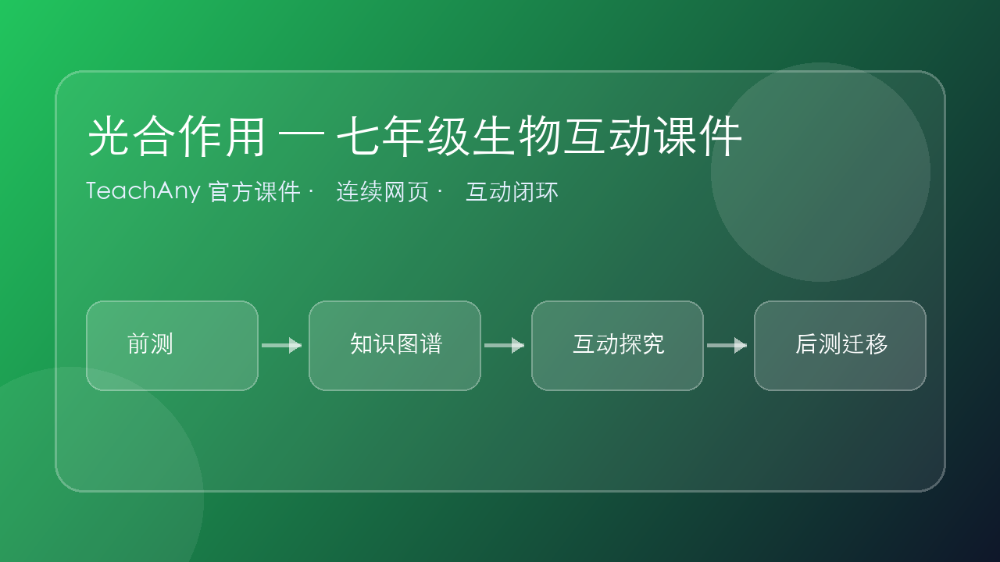

光合作用
绿色植物的能量之源——理解生物如何用阳光制造自己的食物

绿色植物的能量之源——理解生物如何用阳光制造自己的食物
光合 — 制造 — 储存能量呼吸 — 分解 — 释放能量
CO₂ + H₂O → 有机物 + O₂光 + 叶绿体叶绿体
既然光合作用需要"光"，那植物在晚上没有阳光时，还能制造有机物吗？
（提示：光合作用是"制造"，而植物还需要"消耗"有机物来维持生命活动，两者同时存在，只是白天和晚上的比例不同）
光合作用制造有机物并储存能量。
这些能量不是从二氧化碳或水中来的，而是从太阳光来的！光能被叶绿体捕获，转化为化学能储存在糖分子中。
植物每合成 1 分子的葡萄糖（C₆H₁₂O₆），需要：
→ 所以光合作用可以写成：6CO₂ + 6H₂O → C₆H₁₂O₆ + 6O₂
叶绿体主要存在于叶肉细胞中，分为两层膜：
形象地说：类囊体是"太阳能电池板"（捕获光能），基质是"组装车间"（用CO₂和水合成糖）。

（提示：拖动选项，排列成正确的顺序）
| 对比维度 | 光合作用 | 呼吸作用 |
|---|---|---|
| 反应物 | CO₂ + H₂O | O₂ + 有机物（糖） |
| 产物 | 有机物 + O₂ | CO₂ + H₂O + 能量 |
| 能量变化 | 储存能量（光能→化学能） | 释放能量（化学能→ATP） |
| 进行条件 | 必须有光 | 有光无光都可以（活细胞时刻进行） |
| 主要场所 | 叶绿体 | 线粒体 |
| 物质变化 | 无机物 → 有机物 | 有机物 → 无机物 |
| 对 O₂ 的态度 | 产生 O₂（制造者） | 消耗 O₂（消费者） |
如果地球上的绿色植物全部消失，人类会怎样？
（提示：从氧气来源、食物来源、碳循环三个角度思考）

And：你已经接触过「chloroplast、sunlight、water」。
But：遇到真实场景时，光背定义不够，容易把条件、证据和结论混淆。
Therefore：本课用「光合作用 — 七年级生物互动课件」建立可解释、可迁移的思维模型。
结构与功能、过程模型、证据推理。学习时按「观察事实 → 建立模型 → 诊断错误 → 迁移应用」推进。
把生命过程拆成结构、功能、环境三条线索，寻找证据。
1. 马上练：学习「光合作用 — 七年级生物互动课件」前，最先要确认的是哪一类证据？
2. 练习题：如果同学解释不出来「为什么」，最可能缺少哪一步？
chloroplast、sunlight、water。先确认这些基础是否能说清楚，否则回到前测补洞。
bio-m-photosynthesis-m：光合作用 — 七年级生物互动课件。抓住定义、条件、典型模型和反例。
把本课方法迁移到新材料、新数据或新情境中，形成可复用的解题/解释框架。
指出光合作用 — 七年级生物互动课件在题干、图像、实验或文本中的可观察证据。
把概念拆成对象、条件、过程、结果四个部分，避免把概念当口号。
用一句因果链说明：因为哪些条件变化，所以出现怎样的结果。
和相邻知识点比较，找出相同点、差异点和容易混淆的边界。
设计一个新场景，验证你是否真的能使用这个概念，而不是只会复述。
易错点 1：把「条件」和「结论」混淆。诊断方式：遮住结论，只看证据是否足够推出它。
易错点 2：只记住关键词，忘记适用范围。诊断方式：换一个场景，检查规则是否仍然成立。
记忆锚点：先问「看见什么」，再问「为什么」，最后问「还能用到哪里」。这个口诀能把观察、解释、迁移连成闭环。
1. 练习题：面对一个新问题，最能体现你掌握了「光合作用 — 七年级生物互动课件」的是：